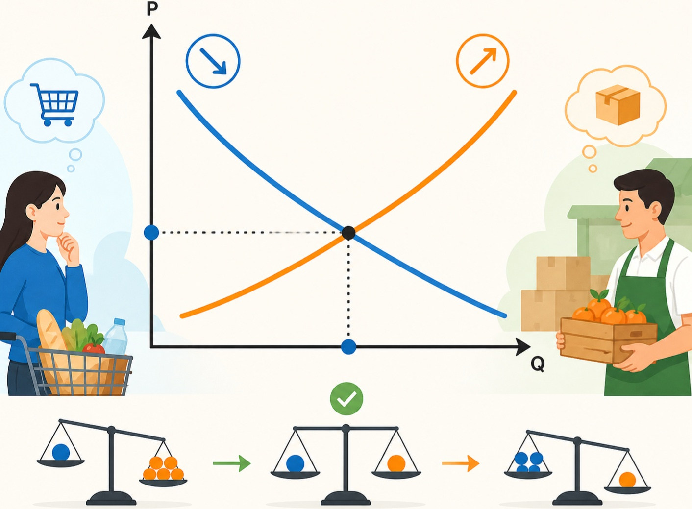

Cung và cầu là gì

Khái niệm nền tảng giải thích giá cả và hành vi thị trường.
Trong kinh tế học, cung và cầu là hai lực lượng cơ bản quyết định giá cả và số lượng hàng hóa được trao đổi trên thị trường. Dù nghe có vẻ đơn giản, nhưng đây là nền tảng giúp giải thích cách thị trường vận hành trong hầu hết mọi lĩnh vực, từ thực phẩm, nhà ở đến công nghệ.
“Cầu” (demand) thể hiện lượng hàng hóa hoặc dịch vụ mà người tiêu dùng sẵn sàng và có khả năng mua ở các mức giá khác nhau. Thông thường, khi giá giảm, cầu tăng vì người mua thấy sản phẩm trở nên “đáng giá” hơn. Ngược lại, khi giá tăng, cầu có xu hướng giảm.
“Cung” (supply) là lượng hàng hóa hoặc dịch vụ mà người sản xuất sẵn sàng cung cấp ra thị trường ở các mức giá khác nhau. Khi giá tăng, nhà sản xuất có động lực sản xuất nhiều hơn vì lợi nhuận cao hơn. Khi giá giảm, cung thường giảm do lợi nhuận thấp.
Điểm thú vị nằm ở sự tương tác giữa cung và cầu. Khi cung và cầu gặp nhau, thị trường đạt trạng thái cân bằng — nơi giá cả ổn định và lượng hàng hóa mua bán phù hợp. Nếu cầu tăng mạnh (ví dụ một sản phẩm trở nên “hot”), giá sẽ tăng vì nhiều người muốn mua hơn so với lượng hàng có sẵn. Ngược lại, nếu cung vượt cầu, giá sẽ giảm để kích thích người mua.
Trong đời sống hằng ngày, quy luật cung – cầu xuất hiện ở khắp nơi. Giá rau có thể tăng khi thời tiết xấu làm giảm nguồn cung. Giá vé máy bay tăng vào dịp lễ do nhu cầu đi lại cao. Những biến động này không phải ngẫu nhiên, mà là kết quả của sự thay đổi trong cung và cầu.
Hiểu được cung và cầu giúp chúng ta lý giải vì sao giá cả thay đổi và đưa ra quyết định tiêu dùng hợp lý hơn. Đồng thời, doanh nghiệp cũng dựa vào quy luật này để điều chỉnh sản xuất, định giá và dự đoán xu hướng thị trường.
Tóm lại, cung và cầu là “ngôn ngữ” của thị trường. Khi nắm được nguyên lý này, chúng ta có thể hiểu rõ hơn cách nền kinh tế vận hành và cách mà các quyết định cá nhân góp phần tạo nên bức tranh kinh tế chung.